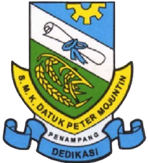

-SMK Datuk Peter Mojuntin merupakan sebuah sekolah menengah kebangsaan yang terletak di Penampang, Kota Kinabalu, Sabah, Malaysia.
-Sekolah ini dibina pada 27 Februari 1979 dan diberi nama setelah Datuk Peter Joinod Mojuntin, yang merupakan 5th Menteri Kebangsaan dan Pengurusan Lautan dan Kebangsaan Sabah.
-Sekolah ini terletak dekat dengan pusat kota Sabah, Kota Kinabalu, dan merupakan salah satu sekolah menengah di Sabah.
-Kira-kira 1,400+ pelajar telah mendaftar di SMK DPM.
Klik teks ini untuk pergi ke Wikipedia SMK DPM.
Klik logo ini untuk ke facebook SMK DPM.